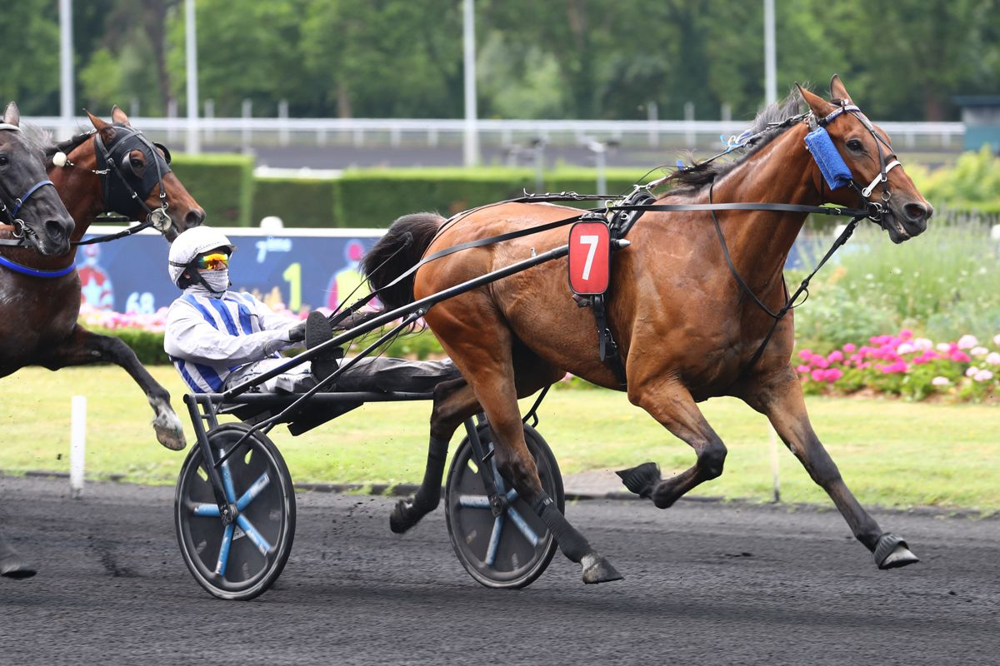

Idao de Tillard e Inexess Bleu conocen sus posiciones de salida para el Elitlopp
El sorteo de puestos para la gran cita del trote europeo, que se disputa el 31 de mayo en las afueras de Estocolmo, ha deparado el número 5 al doble ganador del Prix d'Amérique y el 7 al actual mejor hongre del mundo.

Foto: paris-turf.com
El Elitlopp, la prueba más prestigiosa del calendario sueco de trote, celebró el sorteo de posiciones para sus dos mangas clasificatorias. Dieciséis de los mejores trotadores del mundo, entre ellos cinco preparados en Francia, se medirán en busca de un billete a la final que decidirá al campeón de esta edición.
La primera batería se presenta especialmente exigente. Idao de Tillard, doble laureado del Prix d'Amérique, se las verá con el número 5, justo en el interior de Don Fanucci Zet, vencedor de esta prueba en 2023. El francés buscará tomarse la revancha tras verse perjudicado en la edición de 2024, cuando cometió una falta al inicio por la interferencia de un rival. Keep Going, también tricolor, arrancará desde el 7 con el reto de clasificarse para la final, mientras que la vedette local Borups Victory sufrió con el sorteo del 8.
En la segunda manga, Go on Boy, vigente campeón, partirá con el 5 detrás del autostart en una posición ventajosa para reeditar título. Inexess Bleu, considerado el mejor hongre del momento, intentará superar el 7 con su piloto Alexandre Abrivard al mando. Jabalpur, poseedor del récord de la pista de Vincennes, tendrá opciones desde el pasillo 3, mientras que Jobspost —destacado en el invierno en Vincennes— intentará abrirse paso desde el 8. La cita tendrá lugar el domingo 31 de mayo en el hipódromo de la capital sueca.
— Redacción de Galope al Día